How to Install WordPress on AWS Cloud9 and Simplify Your Workflow?
Introduction:
Hi guys, let me start today’s blog with a story of two friends. These two friends are using non-Linux laptops for their tasks.
Let’s listen through their conversation.
Person A: Hey, have you ever thought about trying out Linux on your laptop?
Person B: Yeah, I've heard a bit about it, but I'm not sure where to start. Isn't Linux a whole different operating system?
Person A: It is! But guess what? You can actually use Linux without changing anything on your laptop. I've been exploring it on Amazon Web Services (AWS).
Person B: Really? How does that work?
Person A: Well, AWS lets you create virtual machines in the cloud, and you can run Linux on those. It's like having a Linux computer that you access through the internet.
Person B: That sounds interesting, but I'm not very tech-savvy. Is it complicated to set up?
Person A: Not at all! It's pretty straightforward. First, you create an AWS account if you don't have one already. Then you use the AWS Management Console to set up what they call an "instance" – that's the virtual machine running Linux.
Person B: But I'm on Windows. Can I still do this?
Person A: Absolutely! That's the cool part. Even if you're on Windows, you can create and use a Linux instance on AWS. You just need an internet connection.
Person B: Got it. So, how do we get started?
So guys, in this blog we leverage this feature to convert our non-Linux system into a Linux System. We will create a Linux environment and host a website on it.
So let's move ahead without much delay.
The Demonstration
In this blog, we will set up and use WordPress on the AWS Cloud9 environment. We all know that WordPress is a popular tool to create websites and manage their content.
We will need to have a few prerequisites fulfilled before starting this demo.
Prerequisites
1. The first requirement is to have an AWS Cloud9 EC2 development environment.
Let’s see how we set this up.
Go to the AWS Cloud9 console. Click on the ‘Create Environment’ button.
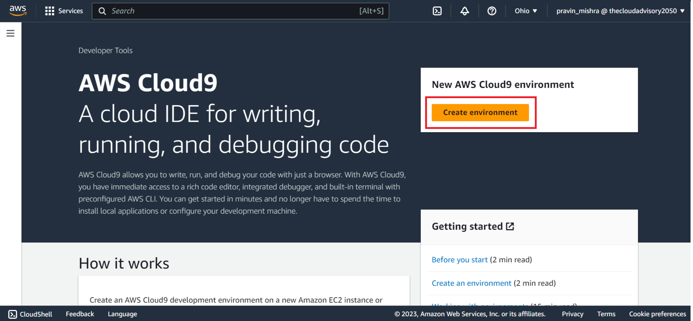We will create a Cloud9 environment with Amazon Linux 2 AMI. This setting launches an EC2 instance with the Linux operating system in AWS Cloud. We will access this EC2 instance as our Linux virtual computer through Cloud9’s environment using the Cloud9’s terminal.
Now, let’s give the details to create a Cloud9 environment.
Give a name and description to the Cloud9 environment. Choose ‘New EC2 instance’ option. This will create a new EC2 instance that the Cloud9 will use for this demo. When I say EC2 instance, this is the virtual machine in the cloud that we can access through our local machine.
The 2nd option is ‘Existing compute’ here you will give the name of the existing EC2 instance that you want to use for your project. You have to give some details about this EC2 instance such as login name, EC2 instance’s public IP address, and port number through which the connection is to be set up.
For this demo…I will choose ‘New EC2 instance’
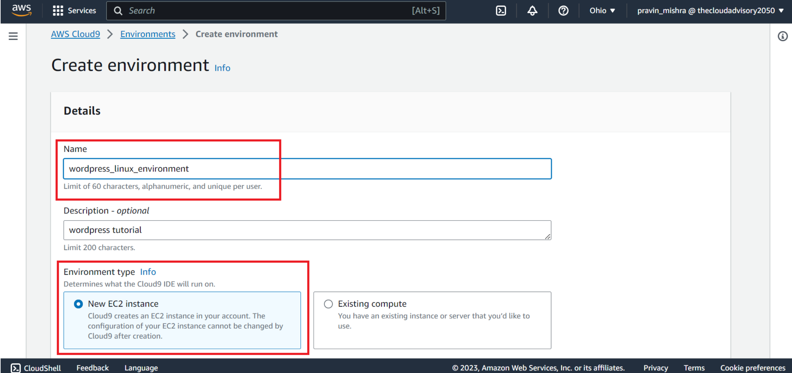As I am creating a new EC2 instance, I have to choose an instance type. Through instance type, I have the options to choose the RAM size and virtual CPU capacity. Here, v in vCPU stands for virtual CPU. For this demo, I will keep the default settings as t2.micro which is free-tier eligible.
In case you use the RAM and CPU with higher capacities, you may end up with additional charges. So if you are a beginner, make sure you use the free-tier eligible instance type.
Then we have to choose the environment platform that my EC2 instance has to use. I will go with Amazon Linux 2. So it doesn't really matter which operating system your local machine is running on, the virtual machine that is allotted to you will have Amazon Linux 2 operating system for your use.
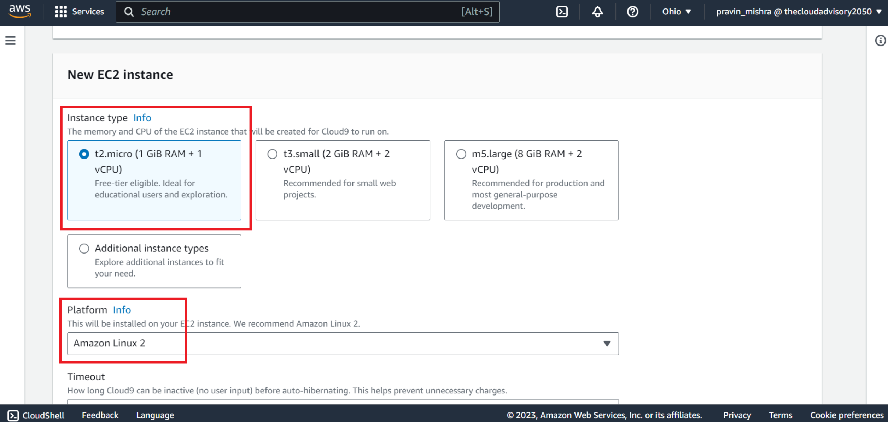Then I will set the timeout to 30 minutes (default). This means that if the Cloud9 environment is not used for 30 minutes, the Cloud9 will go into auto-hibernate mode and help me avoid extra charges that may have incurred in case I had kept the Cloud9 environment idle without using it.
In ‘Network settings’, we have two options on how to connect to the Cloud9 environment.
These options help control how the Cloud9 environment connects to the internet and other computers. It's like adjusting the settings on your phone or computer to connect to different networks.
AWS Systems Manager (SSM) is a tool that helps manage and configure the Cloud9 instance. It provides a secure way to connect to the Cloud9 instance without needing to directly expose it to the internet.
Secure Shell (SSH) is a way to securely access and control computers remotely. In the case of Cloud9, SSH is used to connect to the underlying computer that powers the Cloud9 environment.
I will keep this setting default for this demo.
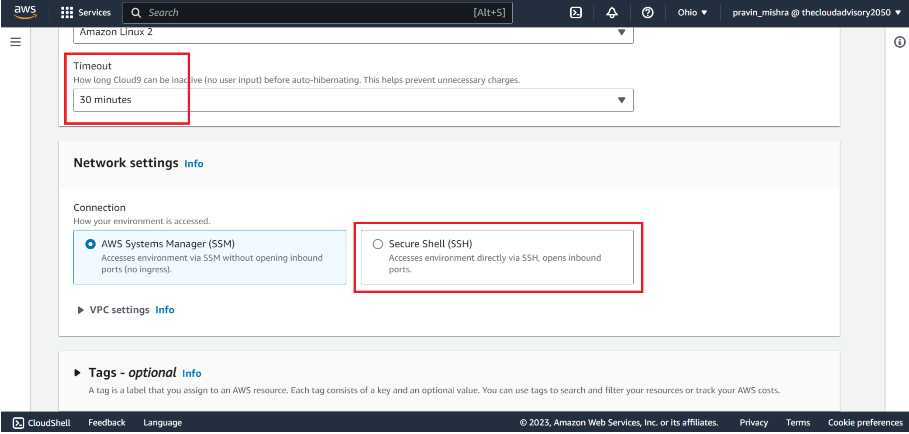In VPC settings, we can see the default VPC and subnet being used for our Cloud9 environment. AWS creates a default VPC and subnet for us to use with our Cloud9 environment. Cloud9 uses this VPC to communicate with the newly created EC2 instance.
In case you want to use your own VPC and subnet, you can select them from the dropdown list.
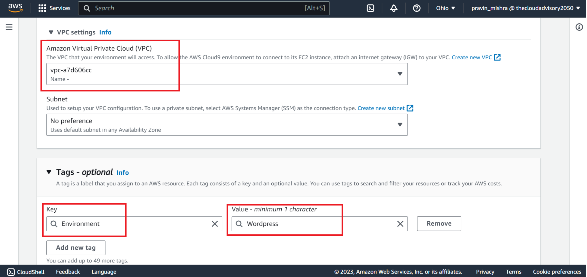Next is ‘tags’. In AWS, tags are a way to label and organise your AWS resources. Now when I say AWS resources…resources such as EC2 instance, Cloud9 environment, database, or storage that we create in the cloud. If we give proper names to these resources, it is easy for us to organise, search and manage our AWS resources.
These tags are given in key-value pairs format.
Let me give a tag to this Cloud9 environment.
Key - Environment, value - Wordpress
Do not use the word ‘name’ for the key, as it is reserved for EC2 instance tagging.
This tag is attached to my Cloud9 environment that I am creating. Also, it is propagated to the underlying resources that are being used by this environment such as EC2 instance and any other resource I will be creating later in this demo.
We can see here a few IAM roles are created automatically to ensure that Cloud9 is able to communicate with few other AWS services while working on my project.
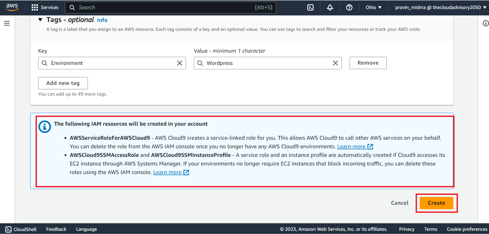Let's go ahead and click on the ‘Create’ button.
In case you see a red flag, do check settings of your web browser, your AWS access permissions, the instance, or the associated network.
If everything goes well, your environment is created and you will see a green bar at the top.
Select on the new environment and choose Open in Cloud9 to launch the IDE.
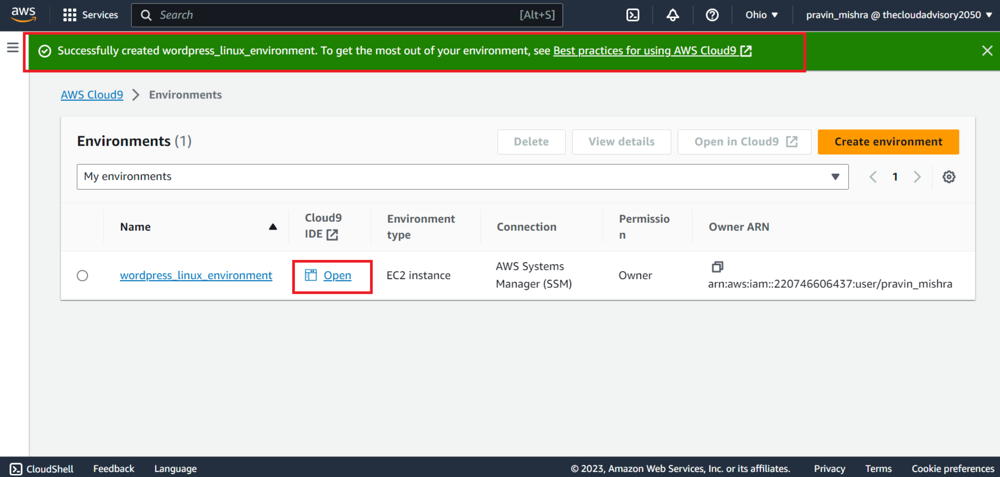The environment is set up.
Let's go to the AWS Cloud9 IDE terminal window.
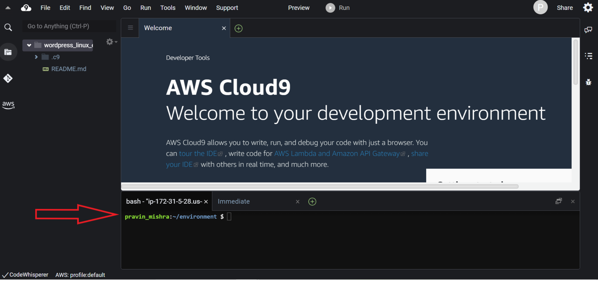So this is the first prerequisite of having an AWS Cloud9 EC2 development environment.
The second prerequisite is to have an updated EC2 instance with all the latest software packages. You can go to the EC2 console to see if a new EC2 instance is launched or not after the Cloud9 environment is created.
We will check for this prerequisite by using a few commands as follows.
$ sudo yum update -yThis command helps your computer stay up-to-date with the newest software. The "sudo" part gives you special permission to make changes, "yum" is the package manager that manages software, "update" means getting the latest versions, and "-y" means saying "yes" to all the updates without asking.
All right, so we are done with the prerequisites. Let’s kick off with the main agenda of this blog.
Steps to follow
To install WordPress on Cloud9's EC2 instance environment, we will have to follow the below steps.
1. Install and configure a database. We will use MariaDB server for this demo. When you install WordPress, it needs a place to store all the content you create and manage. This is where MariaDB comes in. It helps WordPress organize and store everything efficiently, so when people visit your website, it can quickly retrieve the right information and display it properly.
2. Install and configure WordPress. Once we install the WordPress software package, we will edit the wordpress.conf file to make the necessary changes to suit our website. The wordpress.conf file is typically used to configure settings related to the web server (like Apache or Nginx) for your WordPress site.
3. Configure Apache web server. Now that we have a WordPress website, it should be made available to users. A web server is required for this to happen. A web server is essential because it connects websites to users. When you visit a website, your device sends a request to a web server asking for the web page's content (text, images, videos, etc.). The web server then processes the request and sends back the requested content to your device, allowing you to view the webpage.
4. Preview the website. Once we are done with all the above steps, we will check if the website is running or not.
Excited! I am sure, you are!
Let’s get in action, guys.
A. Install and Configure a Database
So our first step is to install and configure a database.
In the Cloud9 window terminal type the following command.
$ sudo yum install -y mariadb-serverThis command helps your computer (in this case, our Linux EC2 instance which is launched while creating the Cloud9 environment) get and install the "mariadb-server" program. It's like telling your computer to fetch a tool it needs and set it up for you automatically. The "sudo" part gives you special permission, "yum" is the tool that manages software, "install" means getting it, and "-y" means saying "yes" to all the installation steps without asking.
$ sudo systemctl start mariadbThis command tells your computer (in this case, our Linux EC2 instance which is launched while creating the Cloud9 environment) to start the "mariadb" program. It's like flipping a switch to turn on the program and make it run. The "sudo" part gives you permission, "systemctl" is the tool to manage programs, "start" means turning it on, and "mariadb" is the name of the program you want to start.
All right, so we are done with the prerequisites. Let’s kick off with the main agenda of this blog.
Steps to follow
To install WordPress on Cloud9's EC2 instance environment, we will have to follow the below steps.
1. Install and configure a database. We will use MariaDB server for this demo. When you install WordPress, it needs a place to store all the content you create and manage. This is where MariaDB comes in. It helps WordPress organize and store everything efficiently, so when people visit your website, it can quickly retrieve the right information and display it properly.
2. Install and configure WordPress. Once we install the WordPress software package, we will edit the wordpress.conf file to make the necessary changes to suit our website. The wordpress.conf file is typically used to configure settings related to the web server (like Apache or Nginx) for your WordPress site.
3. Configure Apache web server. Now that we have a WordPress website, it should be made available to users. A web server is required for this to happen. A web server is essential because it connects websites to users. When you visit a website, your device sends a request to a web server asking for the web page's content (text, images, videos, etc.). The web server then processes the request and sends back the requested content to your device, allowing you to view the webpage.
4. Preview the website. Once we are done with all the above steps, we will check if the website is running or not.
Excited! I am sure, you are!
Let’s get in action, guys.
A. Install and Configure a Database
So our first step is to install and configure a database.
In the Cloud9 window terminal type the following command.
$ sudo yum install -y mariadb-serverThis command helps your computer (in this case, our Linux EC2 instance which is launched while creating the Cloud9 environment) get and install the "mariadb-server" program. It's like telling your computer to fetch a tool it needs and set it up for you automatically. The "sudo" part gives you special permission, "yum" is the tool that manages software, "install" means getting it, and "-y" means saying "yes" to all the installation steps without asking.
$ sudo systemctl start mariadbThis command tells your computer (in this case, our Linux EC2 instance which is launched while creating the Cloud9 environment) to start the "mariadb" program. It's like flipping a switch to turn on the program and make it run. The "sudo" part gives you permission, "systemctl" is the tool to manage programs, "start" means turning it on, and "mariadb" is the name of the program you want to start.
Now we will create a database to store the information that we generate from the WordPress website. We will use the MariaDB client. First start with the following command.
$ sudo mysql -u root -pThis command lets you talk to ‘MySQL’ program. It's like having a conversation with a database. The "sudo" part gives you permission to do this, "mysql" is the name of the database program, "-u root" means you're using a user named "root" which is a powerful user, and "-p" means you'll need to type in a secret password to start talking to the database.
Now you will enter into the MariaDB client terminal.
MariaDB [(none)]> create database wordpress_test;This line is like telling the computer (in this case our Linux EC2 instance which is launched while creating the Cloud9 environment) to make a new storage space for our database named "wordpress_test."
Then
MariaDB [(none)]> grant all privileges on wordpress_test.* to wordpress_user@localhost identified by 'YourSecurePassword';In this line we are saying that we want to let a user named "wordpress_user" have special powers over the database "wordpress_test."
Let me split the whole line and explain separately.
grant all privileges: This part means we are giving the user full access to do various things with the "wordpress_test" database.
on wordpress_test.*: This means we are saying that the user can do these things on everything within the "wordpress_test" database.
to wordpress_user@localhost: Here, we are specifying that this permission is for the user "wordpress_user," and they can only use it when they're connecting from the same computer ("localhost").
identified by 'YourSecurePassword': This is where we are setting up a secret password for the user. It's like locking the database with a password, so only the user with this password can access it.
So, in simpler terms, this line is allowing a user to fully manage the database, and we are giving them a password to securely access it from the same computer.
Now to log out of the MariaDB client, we will simply type ‘exit’ command.
So here we are done with our first step.
B. Install and configure WordPress
The second step is to install and configure WordPress.
Let me check the current working directory of my Cloud9 window terminal using the command ‘pwd’
$ pwdIt is /home/ec2-user/environment.
So from here we will start our second step.
In this ‘environment’ directory we will create two new directories called ‘config’ and ‘wordpress’.
$ mkdir config wordpressThen we will create a file with the name wordpress.conf in the ‘config’ directory. We will use the ‘touch’ command.
$ touch config/wordpress.confThis image shows the wordpress.conf file created inside the ‘config’ directory.
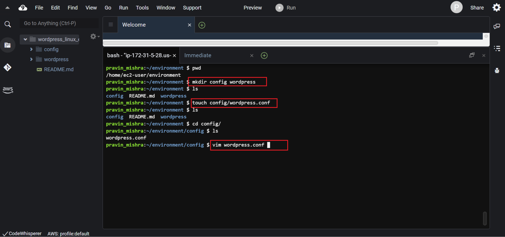Now we will write instructions in this wordpress.conf file using the vim editor. These instructions will tell the Apache web server on how to handle the WordPress website.
So, first use the ‘vim’ command to enter the wordpress.conf file.
Navigate to the location where this file is located using the ‘cd’ command.
$ vim wordpress.confNow you are in the wordpress.conf file. Click on the ‘i’ button to enable the ‘insert’ mode.
Now write the instructions in this file.
Listen 8080
DocumentRoot "/var/www/wordpress"
ServerName www.example.org
# Other directives here
Let us quickly understand these instructions.
‘Listen 8080’ - This tells the web server to listen on a different port, 8080, instead of the usual port 80.
<VirtualHost *:8080> - This marks the start of a configuration block for a virtual host, which is a way to manage multiple websites on the same server. The * means the host can respond to requests from any IP address, and :8080 specifies the port.
DocumentRoot "/var/www/wordpress" - This sets the folder where the website's files are located.
ServerName www.example.org - This is the domain name associated with the virtual host. When someone enters this domain in their browser, the web server knows to use this configuration.
</VirtualHost> - This marks the end of the configuration block for the virtual host. It's like saying, "That's all for this host."
In a nutshell I can say that, this code sets up a virtual host on port 8080, telling the web server to use files from the "/var/www/wordpress" folder when someone visits the domain "www.example.org" on that port.
Now, exit the vim editor. Click on the ‘esc’ button to exit the ‘insert’ mode. Save the wordpress.conf file by typing ‘:wq’ key combination.
This ‘:wq’ key combination will save the file and exit from the vim editor.
Now we will install the WordPress program. To do this, we have to download the latest WordPress program on the Internet using the ‘wget’ command.
So make sure you are in the ‘environment’ directory. If not, use the ‘cd’ command to navigate.
To download the WordPress program from the internet, following is the command.
$ wget https://wordpress.org/latest.tar.gzHere,
- Wget - Is the command-line tool that's used to download files from the web.
- https://wordpress.org/latest.tar.gz - This is the web address/URL of the WordPress file we want to download. It is the latest version of WordPress compressed into a file called "latest.tar.gz." It contains all the files needed to install WordPress.
So, when we run this command, our Linux EC2 instance uses the ‘wget’ tool to reach out to the internet, find the WordPress file at that URL, and then download it to our Linux EC2 instance.
The downloaded file is a compressed file, so we have to decompress/unzip the file using the following command.
$ tar xvf latest.tar.gzHere,
- tar - This is a command used to work with archived files, often called "tarballs." Tarballs are files that bundle together multiple files and folders into one.
- xvf - These are options you're giving to the tar command.
- x: Stands for "extract." This tells the tar command that we want to extract the contents from the archive.
- v: Stands for "verbose." This option makes the command show us the names of the files as they're being extracted.
- f: Stands for "file." This option specifies that we are providing the name of the file we want to extract, which is "latest.tar.gz" in this case.
- latest.tar.gz: This is the name of the file we want to extract. It's the WordPress archive we downloaded earlier.
So, when we run this command, we are telling our Linux EC2 instance to use the tar command to extract the contents of the "latest.tar.gz" file. It will take all the files and folders that were bundled together and lay them out in our current directory which is the ‘environment’ directory. This is the first step in setting up a WordPress installation after downloading its compressed file.
Now we want a .php file in the ‘wordpress’ directory, so let create wp-config-sample.php file using ‘touch’ command.
$ touch wordpress/wp-config-sample.phpIn this wp-config-sample.php, we will update the sample data with our database setup. We will put the database name, database user name, and database password in this config file.
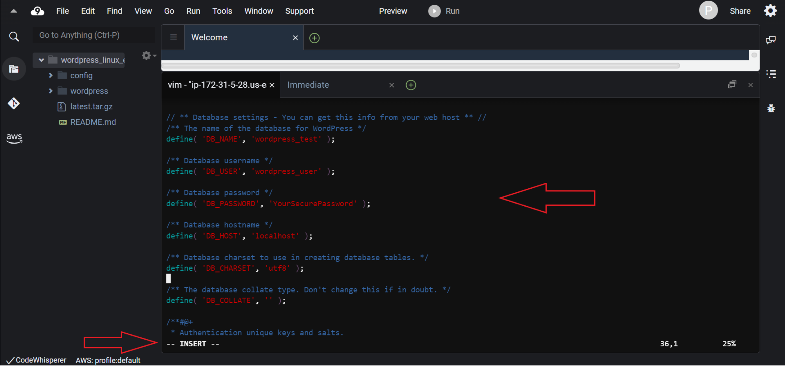This is the script you need to add in the ‘wp-config.php’ file.
// ** MySQL settings - You can get this info from your web host ** //
/** The name of the database for WordPress */
define( 'DB_NAME', 'wordpress_test' );
/** MySQL database username */
define( 'DB_USER', 'wordpress_user' );
/** MySQL database password */
define( 'DB_PASSWORD', 'YourSecurePassword' );
/** MySQL hostname */
define( 'DB_HOST', 'localhost' );
/** Database Charset to use in creating database tables. */
define( 'DB_CHARSET', 'utf8' );
/** The Database Collate type. Don't change this if in doubt. */
define( 'DB_COLLATE', '' );
define('FORCE_SSL', true);
if ($_SERVER['HTTP_X_FORWARDED_PROTO'] == 'https') $_SERVER['HTTPS'] = 'on';
Then save the file changes and exit the file using the key combination ‘:wq’.
Let’s quickly see the meaning of the above script.
a. Database Settings:
These settings define the information needed to connect WordPress to a MySQL database.
- DB_NAME: This defines the name of the MySQL database that WordPress will use (e.g., 'wordpress_test').
- DB_USER: This specifies the MySQL database username (e.g., 'wordpress_user').
- DB_PASSWORD: This contains the password for the MySQL database user (e.g., 'YourSecurePassword').
- DB_HOST: This is the hostname or IP address of the MySQL database server (e.g., 'localhost').
- DB_CHARSET: This sets the character set for the database tables (e.g., 'utf8').
- DB_COLLATE: This defines the database collation type. It's generally left empty unless you have a specific reason to change it.
b. Security Settings:
These settings are related to security measures for the WordPress site.
- FORCE_SSL: When set to true, this enforces the usage of SSL (HTTPS) for all communication with the website.
c. HTTP_X_FORWARDED_PROTO Check:
This section checks if the HTTP_X_FORWARDED_PROTO header is set to 'https'. The HTTP_X_FORWARDED_PROTO header is often used to indicate the protocol used for the original request, especially when the website is behind a reverse proxy or load balancer.
If the header is 'https', then the code sets the $_SERVER['HTTPS'] variable to 'on', which is a way to indicate that the connection is secure via HTTPS.
Overall, this configuration file ensures that WordPress connects to the specified MySQL database using the provided credentials, and it also enforces the usage of SSL (HTTPS) for secure communication. The last part with the HTTP_X_FORWARDED_PROTO check is used when the site is hosted behind a proxy or load balancer to correctly handle HTTPS redirection and ensure that the website knows it's being accessed over a secure connection.
Now simply rename the ‘wp-config-sample.php’ to ‘wp-config.php’. We just want to get rid of the word ‘sample’ from the file name. Use the ‘mv’ command below.
$ mv wp-config-sample.php wp-config.phpSo here we are done with step -2, which is installing and configuring the database.
C. Configure Apache web server
The next step is to configure the Apache web server.
Let me first check if Apache web server is already installed or not on my Linux EC2 instance. I will type the following command.
$ httpd -vYes, it is installed.
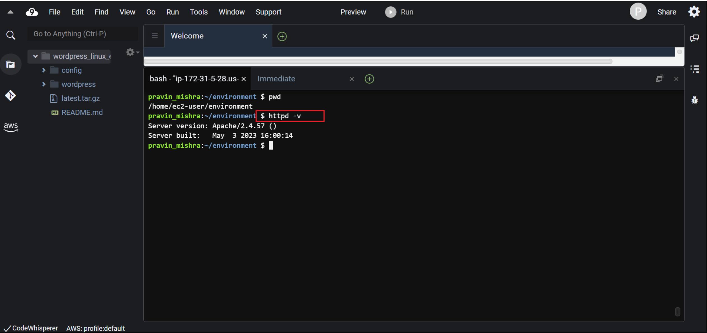In case it is not installed, use the below command.
$ sudo yum install -y httpdNow navigate to the /etc/httpd/conf.d directory, which is the location for Apache's virtual host configuration files. Apache's virtual host configuration files are files that define how the Apache HTTP server should handle multiple websites on a single physical server. These files contain instructions that allow the server to direct incoming web requests to the appropriate website's files and content, even though all these websites are hosted on the same server.
In our case, we have just one website at this moment. So now we will link the wordpress.conf file with this /etc/httpd/conf.d file.
Remember the wordpress.conf file has the instructions for the Apache web server. We will do this using the ‘ln’ command.
$ sudo ln -s /home/ec2-user/environment/config/wordpress.confThis command is used to create a symbolic link, also known as a symlink, in a Linux system.
Here,
- sudo: This is a command that gives us elevated privileges, allowing us to perform administrative tasks.
- ln: This is the command used to create links in Linux. It stands for "link."
- -s: This is an option for the ln command that specifies we want to create a symbolic link. A symbolic link is like a shortcut or reference to another file or directory.
- /home/ec2-user/environment/config/wordpress.conf: This is the path to the source file that we want to link to. It's the file we want to create a symbolic link for.
Symbolic links are useful for creating references to files in different locations, allowing you to access the same content from multiple paths.
Now let's go to the /var/www directory, which is the main folder for Apache servers. Then, we'll use the ln command to connect the wordpress directory you made before to where we are now (/var/www).
$ cd /var/www
$ sudo ln -s /home/ec2-user/environment/wordpressThis command creates a symbolic link or we can say a shortcut in the current directory. This link points to the original "wordpress" directory you created in the /home/ec2-user/environment/ directory. This way, Apache will serve the website's files from the /var/www/wordpress location, even though the actual content resides in the /home/ec2-user/environment/wordpress directory.
Now we have to make the directory executable where the website and web server files are located. So we will use the following commands.
$ sudo chmod +x /home/ec2-user/Here,
- sudo: This is a command used to run another command with elevated privileges, usually requiring administrator or superuser access.
- chmod: This is the command used to change the permissions of files and directories in Linux.
- +x: This part of the command specifies the change you want to make. In this case, +x means adding the "execute" permission.
- /home/ec2-user/: This is the path to the directory for which you want to change the permissions. It's the directory you're targeting.
So, when we run sudo chmod +x /home/ec2-user/, we are telling the system to add the "execute" permission to the directory located at /home/ec2-user/. This permission change allows us to treat the directory as an executable, meaning we can navigate into it and access its contents as a directory that can be executed.
Keep in mind that directories are usually given execute permission to allow you to enter them and access their contents. Files, on the other hand, are given execute permission to allow them to be run as programs or scripts.
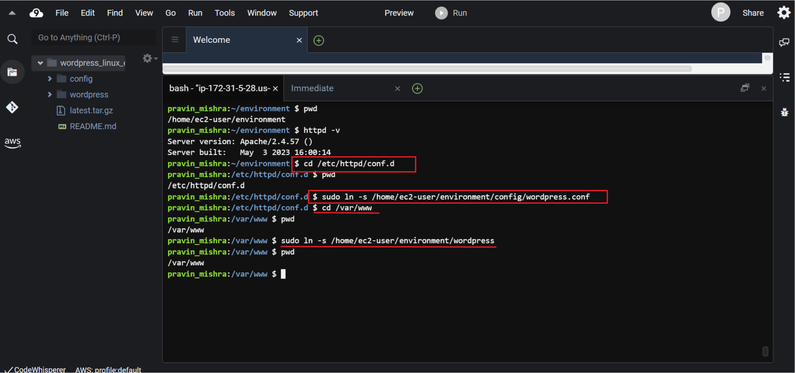We have made all the necessary settings in the Apache web server. Let’s restart the web server, so that it gets updated with the latest settings. We will use the following command.
$ sudo service httpd restartHere,
- sudo: This is a command that gives us elevated privileges, allowing us to perform administrative tasks.
- service httpd restart: This is the main command we are running. It's used to manage the operation of the Apache HTTP server:
- service: This is a command used to manage system services, including starting, stopping, and restarting them.
- httpd: This is the name of the Apache HTTP server service. "httpd" stands for "HTTP Daemon," which is the background process that serves web content.
- restart: This part of the command specifies the action we want to take. In this case, we are instructing the system to restart the Apache HTTP server.
When we run sudo service httpd restart, we are telling the system to restart the Apache HTTP server using elevated privileges. This is useful when we have made changes to the server's configuration or files and want those changes to take effect without fully stopping and starting the server. Restarting the server helps apply new settings or configurations without interrupting the overall operation of the server.
We can also check the status of the Apache web server with the following command.
$ sudo service httpd statusPreview the website
Now we reach step-4 of this demonstration. In this final step we will preview the website’s content.
Now go to the ‘wordpress’ directory.
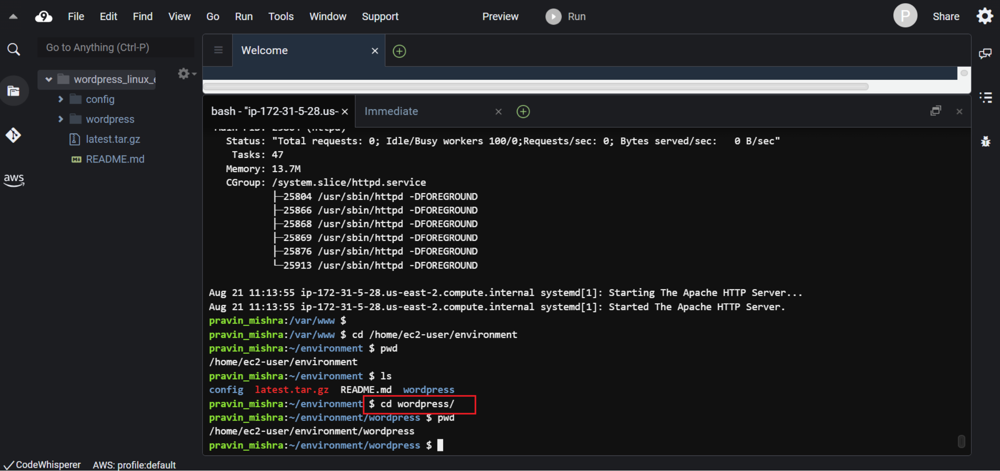Preview the website
Now we reach step-4 of this demonstration. In this final step we will preview the website’s content.
Now go to the ‘wordpress’ directory.
Locate the index.php file at this location and enter this file using the vim command.
$ vim index.phpTo edit the file, click on ‘i’ button to enable the insert mode. Type the following HTML formatted text to this file as below.
Hello World!
Save and exit the file with the key combination ‘:wq’.
Now In the Environment window which lies in the left side of the screen, choose the wordpress folder, and then choose Preview, Preview Running Application.
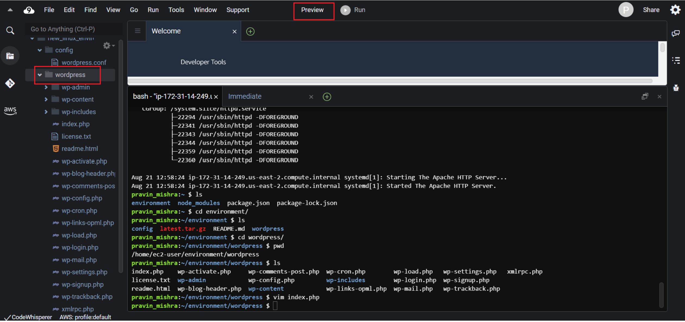We can see the web page displaying “Hello World!’
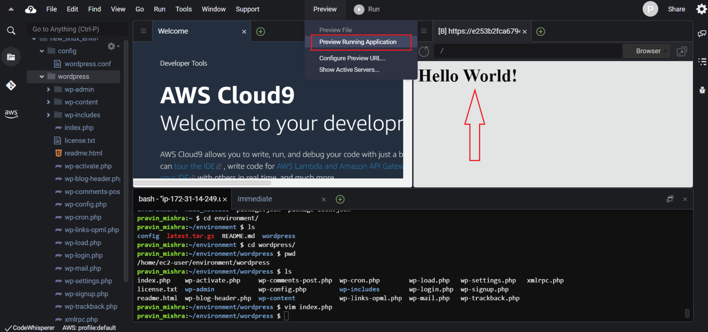Conclusion:
So this is how we can use the Cloud9 environment and get the WordPress website host in the Linux EC2 instance.
Try changing the contents of the index.php file and see if the changes are getting reflected in the main website.
And here we are through the exciting journey to set up and utilize WordPress within the AWS Cloud9 environment. From setting up prerequisites to configuring databases, installing WordPress, and configuring the Apache web server, each step was meticulously explored. This tutorial not only enabled us to grasp the technicalities but also empowered us to harness the power of AWS Cloud9 and WordPress harmoniously.
Share this post: